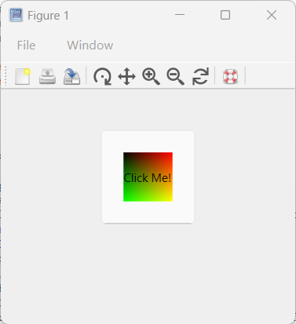

Exemples
Bouton poussoir
f = figure;
b = uicontrol(f,'Style','pushbutton', 'String', 'Cliquez-moi', 'Position', [100 100 60 30], 'Callback', 'disp(''Bonjour tout le monde!'')')
Case à cocher
f = figure();
h = uicontrol(Style='checkbox', String='Cliquez-moi!', Position=[100, 100, 100, 50]);
Édition
f = figure();
h = uicontrol(Style='edit', String='Cliquez-moi!', Position=[100, 100, 100, 50]);
Image
hFig = figure(Position=[100, 100, 300, 300]);
imgSize = 50; % Taille de l'image
[X, Y] = meshgrid(1:imgSize, 1:imgSize);
CData = cat(3, X/imgSize, Y/imgSize, zeros(imgSize));
CData = im2double(CData); % S'assurer que l'image est de type double
hButton = uicontrol(Style='pushbutton', Position=[100, 100, 100, 100], CData=CData, String='Cliquez-moi!');
Démo uicontrol
addpath([modulepath('graphics','root'), '/examples/uicontrol'])
edit uicontrol_demo
uicontrol_demo
Démo uicontrol Interruptible
addpath([modulepath('graphics','root'), '/examples/uicontrol'])
edit uicontrol_demo_interruptible
uicontrol_demo_interruptible